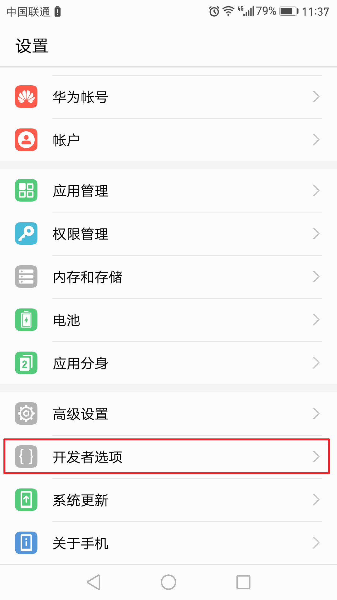

在手机的设置中隐藏着一个开发者选项，进入其中可以使用一些开发者要用到的设置，也可以通过设置进行硬件加速等操作，下面就教大家如何进入手机开发者模式。
经过对比，发现各品牌的手机打开开发者选项的方法都大同小异。
1、首先打开手机中的“设置”
2、在设置中找到手机参数信息
手机参数信息一般在手机设置界面的最下面“关于手机”中可以找到，但不同手机可能有所不同
3、在关于手机界面找到版本号，连续点击7次就可以开启开发者选项。
4、然后退出关于手机界面，在设置主界面就能看到“开发者选项”了
如果开启后找不到开发者选项，可以到设置中的更多设置中找( 不同手机位置有所不同 )

5、在开发者选项中可以打开一些测试用的选项，如果你是手机app开发者，可能会用到这些选项。
6、如果你想要对手机进行硬件加速，可以按照图中所示
开启“强制进行GPU渲染”：使用GPU渲染可以增加2D应用的流畅度，同时会增加手机的功耗
“强制启用4x MSAA”：就是抗锯齿，让画面的边缘更加柔滑，会增加功耗和占用部分内存，追求画面极致可开启，若内存不足则关闭
“停用HW叠加层”功能：HW是hardware的简称，这里是硬件解码的意思，默认情况下手机使用CPU进行图像叠加，停用HW叠加层后会调用GPU，使画面更加流程
除了以上选项，还有开发调试最常用的 USB调试 选项，用于控制调试手机